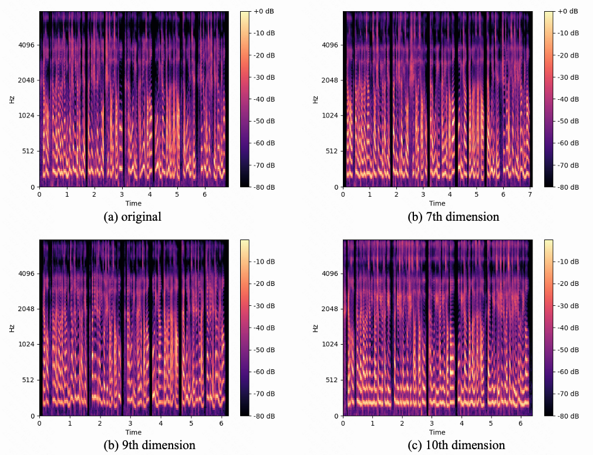

Unsupervised Generative Modeling for Cross-Speaker Style Transfer and Control in End-to-End Speech Synthesis
Abstract
Cross-speaker style transfer and control is the key to expressive and controllable speech synthesis. In the existing cross-speaker style transfer and control task, style label is necessary to provide the style for a target speaker. However, it is expensive to obtain data with labels and difficult to accurately describe the style of speech with limited labels. In response to this problem, we propose an unsupervised cross-speaker style transfer and control method that can realize the transfer and control of styles from source speaker to target speaker without labels. Firstly, a reference encoder structure based on reparameterization quantization variational autoencoder (RQ-VAE) and style bottleneck is designed to extract style information. Secondly, we propose a speaker-wise batch normalization layer to reduce the interference of speaker trimbre information. The inputs of each batch are separately normalized at the speaker level so that they follow a standard normal distribution. Furthermore, a style constrast data automatic generation method is proposed to construct constrast cycle consistency loss. Experimental results show that the method outperforms the baseline. Synthesized speech samples are available.
Model Architecture
|  |
Audio Samples
Target Singers
| Target | Samples |
|---|---|
| Female | |
| Male |
Source Singers
| Source | Samples |
|---|---|
| F1 | |
| F2 | |
| M1 | |
| M2 |
Comparison with Baseline Systems
Target Female
| Target Speaker | Reference | Baseline | Proposed | |
|---|---|---|---|---|
| BASE2 | ||||
| Ours |
Target Male
| System | F1 | F2 | M1 | M2 |
|---|---|---|---|---|
| BASE1 | ||||
| BASE2 | ||||
| Ours |
Ablation
Ablation of the feature representation
| Feature Representation | F2F | F2M | M2F | M2M |
|---|---|---|---|---|
| MEL80 | ||||
| MFCC20 | ||||
| +Aug |
Ablation of the temporal down-sampling rate
| F2F | F2M | M2F | M2M | |
|---|---|---|---|---|
| 1 | ||||
| 8 | ||||
| 32 |
Ablation of the content consistency loss
** source female*
** source male*
| F2F | F2M | M2F | M2M | |
|---|---|---|---|---|
| w/o | ||||
| w |